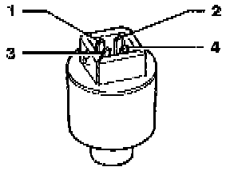

Low Pressure Sensor / Switch: Description and Operation
A/C Pressure Switch -F129-:

Can be removed and installed without discharging A/C system (Valve under Switch). Make sure O-ring fits properly in groove.
Identified with a green label or the lettering "R-134a."
Functions:
Switches the A/C clutch -N25- OFF if system pressure is too low (low refrigerant charge). For this function, switching takes place between terminal 1 (T4a/1) and terminal 2 (T4a/2).
- Switch opens (compressor OFF): below 1.2 bar (17.4 psi)
- Switch closes (compressor ON): above 2.4 bar (34.8 psi)
Switches A/C clutch -N25- OFF if system pressure is too high. For this function, switching takes place between terminal 1 (T4a/1) and terminal 2 (T4a/2).
- Switch opens (compressor OFF): above 32.0 bar (454 psi)
- Switch closes (compressor ON): below 24.0 bar (348 psi)
Switches the radiator coolant fan -V7- to second speed when A/C system pressure increases. For this function, switching takes place between terminal 3 (T4a/3) and terminal 4 (T4a/4).
- Switch closes (2nd speed ON): above 16.0 bar (232 psi)
- Switch opens (2nd speed OFF): below 12.5 bar (181 psi)